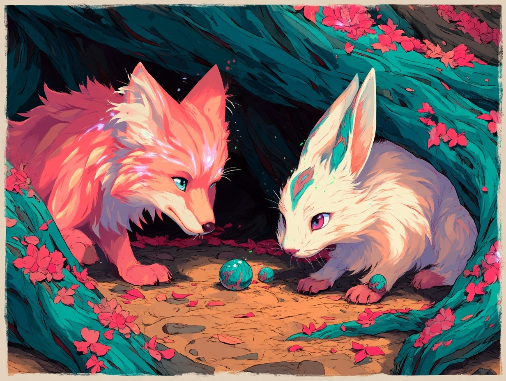
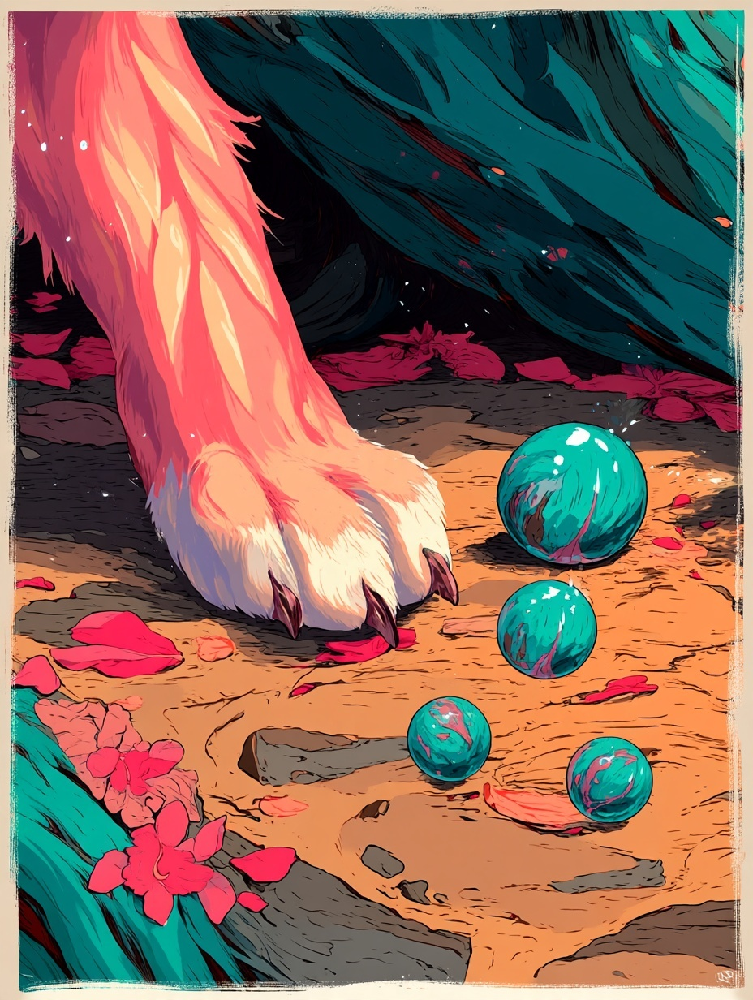
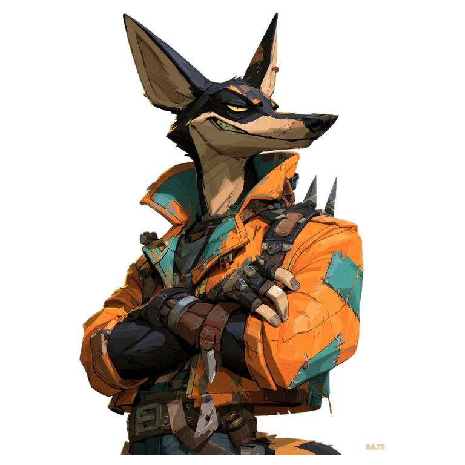

ONE LITTLE MARBLE
The marble leads the eye. A wide scene breaks into close-ups; a shadow silences the page; Raze tears through the frame. One marble slips out into the next chapter.
Two new Midjourney candidates supply the friends and paw close-up. Raze uses his existing bundled artwork. The hare’s clover ornaments and exact color continuity still need refinement. This preview does not approve or replace canonical art.
Sound is a temporary synthesized timing track. Final music and the remaining Abbie, companion and climb sequences follow visual approval.